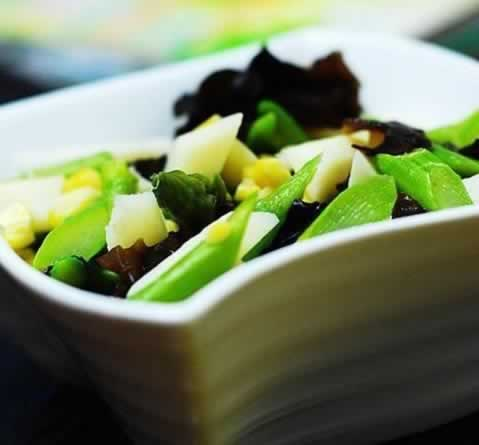
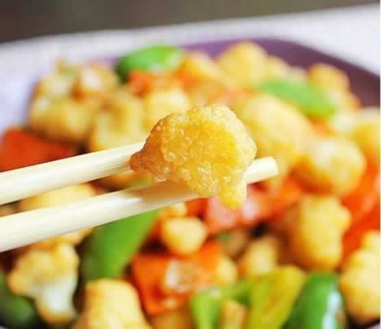

剖宫产妈妈的产前饮食要点
进行剖宫产的妈妈在手术前夜的晚餐要清淡，午夜12点以后不要再吃东西，以保证肠道清洁，减少术中感染。因为麻醉最严重的并发症就是呕吐及反流，使胃内容物误吸入气管内，引起机械性气道阻塞，所以准备剖宫产的准妈妈在手术前禁食是非常重要的，通常需要准妈妈在手术前4个小时就开始禁止进食水和饮料，以防止在手术中发生不测。此外，剖宫产的妈妈们在术前半月不宜食用高级滋补品。如高丽参、洋参，以及鱿鱼等食品。因为参类具有强心、兴奋作用，而鱿鱼体内含有丰富的有机酸物质EPA，EPA能抑制血小板凝集，不利于术后止血与创口愈合。
剖宫产与顺产不同，术后的恢复需加倍重视。剖宫产术后的6小时必须禁食，因为此时进食会导致肠道功能受刺激，肠蠕动减慢，以及肠腔内有积气，易造成术后的腹胀感。6小时后才可以服用一些排气类食物(如萝卜汤等)，以增强肠蠕动，促进排气，减少腹胀，并使大小便通畅。易发酵产气多的食物（如糖类、黄豆、豆浆、淀粉等）在产后也要少吃或不吃，以防腹胀。当产妇排气后，饮食可由流质改为半流质，食物宜富有营养且易消化。如蛋汤、烂粥、面条等，然后依产妇体质，饮食再逐渐恢复到正常。
本周推荐尝试食谱1：
田园小炒
推荐理由：田园小炒菜色鲜艳，味道清爽可口，适合孕妇食用。
食谱原料：
西芹、鲜蘑菇、鲜草菇、樱桃番茄、胡萝卜各30克，精制油、盐适量。
制作方法：
1.西芹切成4公分段，其他切成片；
2.热锅下油，即倒入所有主料，加盐，一调羹水，加盖，大火2分钟，起锅装盘。
本周推荐尝试食谱2：
蚝油菜花
蚝油菜花
推荐理由：菜花中维生素C的含量极为丰富，有开胃消食、化滞消积之功效。
食谱原料：
菜花400克，香油2克，虾子酱油15克，盐、蚝油、白糖、料酒各10克，葱花5克，干淀粉70克，花生油500克（约耗30克）。
制作方法：
1、菜花洗净，掰成小朵，随凉水下锅，同时加入盐5克，煮熟后捞出，沥去水分，均匀地滚上干淀粉。一定要轻轻地薄薄地滚上一层，不能过厚过多。
2、将虾子酱油、盐、蚝油、白糖、料酒、干淀粉放入碗内，调成芡汁。
3、炒锅上火，放入花生油，烧至七成热，下菜花炸呈金黄色，捞出，沥油。
4、锅内留底油，下葱花略煸，投入菜花，倒入芡汁，翻炒均匀，淋入香油，盛入盘内即成。